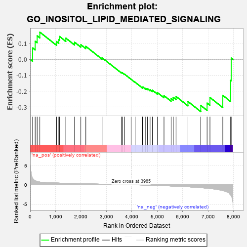
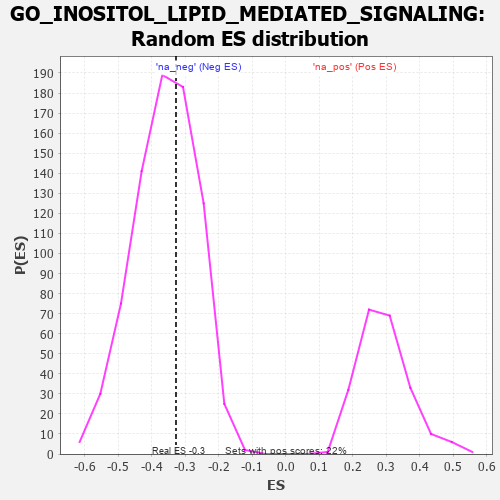

| | | Dataset | 7d |
| Phenotype | NoPhenotypeAvailable |
| Upregulated in class | na_neg |
| GeneSet | GO_INOSITOL_LIPID_MEDIATED_SIGNALING |
| Enrichment Score (ES) | -0.32795933 |
| Normalized Enrichment Score (NES) | -0.91181844 |
| Nominal p-value | 0.5979381 |
| FDR q-value | 0.94193655 |
| FWER p-Value | 1.0 |
Table: GSEA Results Summary

Fig 1: Enrichment plot: GO_INOSITOL_LIPID_MEDIATED_SIGNALING
Profile of the Running ES Score & Positions of GeneSet Members on the Rank Ordered List
| PROBE | GENE SYMBOL | GENE_TITLE | RANK IN GENE LIST | RANK METRIC SCORE | RUNNING ES | CORE ENRICHMENT | | 1 | IRS1 | | | 98 | 1.659 | 0.0714 | No |
| 2 | WNT16 | | | 198 | 1.072 | 0.1131 | No |
| 3 | HGF | | | 276 | 0.870 | 0.1474 | No |
| 4 | PLD1 | | | 381 | 0.716 | 0.1705 | No |
| 5 | AKT1 | | | 1040 | 0.476 | 0.1116 | No |
| 6 | SRC | | | 1128 | 0.459 | 0.1238 | No |
| 7 | GAB1 | | | 1158 | 0.453 | 0.1430 | No |
| 8 | EXOC1 | | | 1403 | 0.409 | 0.1329 | No |
| 9 | PI4KB | | | 1747 | 0.346 | 0.1072 | No |
| 10 | ROR1 | | | 1993 | 0.306 | 0.0917 | No |
| 11 | C1QBP | | | 2189 | 0.278 | 0.0812 | No |
| 12 | BECN1 | | | 2828 | 0.179 | 0.0099 | No |
| 13 | MAPK3 | | | 3589 | 0.062 | -0.0827 | No |
| 14 | CBL | | | 3621 | 0.056 | -0.0838 | No |
| 15 | NF1 | | | 3713 | 0.040 | -0.0933 | No |
| 16 | IGF1R | | | 3970 | -0.002 | -0.1254 | No |
| 17 | PLCE1 | | | 4127 | -0.028 | -0.1437 | No |
| 18 | PRR5L | | | 4418 | -0.080 | -0.1762 | No |
| 19 | MYDGF | | | 4429 | -0.081 | -0.1733 | No |
| 20 | NTRK2 | | | 4543 | -0.104 | -0.1823 | No |
| 21 | GATA3 | | | 4614 | -0.120 | -0.1850 | No |
| 22 | PI4KA | | | 4715 | -0.143 | -0.1904 | No |
| 23 | PLCL2 | | | 4807 | -0.159 | -0.1939 | No |
| 24 | KLF4 | | | 5005 | -0.198 | -0.2087 | No |
| 25 | PTEN | | | 5262 | -0.261 | -0.2278 | No |
| 26 | FGFR1 | | | 5543 | -0.332 | -0.2463 | No |
| 27 | ROR2 | | | 5626 | -0.353 | -0.2388 | No |
| 28 | TPTE2 | | | 5736 | -0.388 | -0.2329 | No |
| 29 | INSR | | | 6204 | -0.538 | -0.2646 | No |
| 30 | EGFR | | | 6708 | -0.765 | -0.2893 | Yes |
| 31 | FBXL2 | | | 6956 | -0.911 | -0.2744 | Yes |
| 32 | PLCB4 | | | 7069 | -0.977 | -0.2392 | Yes |
| 33 | NLRC3 | | | 7574 | -1.515 | -0.2262 | Yes |
| 34 | FYN | | | 7881 | -2.622 | -0.1323 | Yes |
| 35 | PLCB1 | | | 7904 | -2.841 | 0.0084 | Yes |
Table: GSEA details [plain text format]

Fig 2: GO_INOSITOL_LIPID_MEDIATED_SIGNALING: Random ES distribution
Gene set null distribution of ES for GO_INOSITOL_LIPID_MEDIATED_SIGNALING